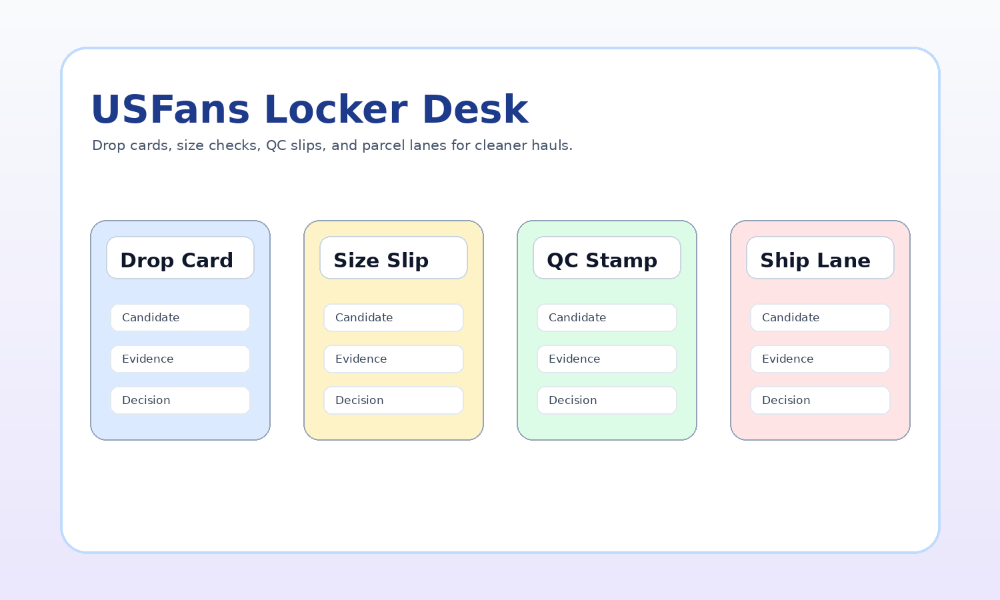

USFans Spreadsheet works like a locker desk: drop cards, size slips, QC stamps, and shipping lanes help you keep the haul organized.

Each category is a locker card with the evidence to check before the item ships.
sneakers, runners, boots, slides, and fit-sensitive footwear drops.
Slip: insole lengthfleece layers, knits, embroidery, oversized fits, and shoulder checks.
Slip: chest widthgraphic tees, blanks, collar checks, print placement, and wash-risk basics.
Slip: print placementouterwear drops where lining, zipper detail, sleeve length, and parcel volume matter.
Slip: zipper closeupsdenim, cargos, track pants, shorts, waist checks, and fabric drape.
Slip: waist measurecaps, beanies, bucket hats, crown shape, embroidery, and closure hardware.
Slip: crown shapematching outfits, tracksuits, color consistency, and paired sizing slips.
Slip: top/bottom matchbasics, socks, pack counts, comfort fabric, and light parcel fillers.
Slip: pack countkits, retro shirts, namesets, patches, sponsor prints, and badge alignment.
Slip: badge alignmentbags, belts, wallets, sunglasses, jewelry, and hardware-focused add-ons.
Slip: hardware finishseasonal extras, lifestyle pieces, desk finds, and unusual locker picks.
Slip: seller photosStart with a category and make a short list.
Record sizing and photo evidence.
Approve, measure, exchange, or return.
Plan package weight and line choice.
A few extra controls to decide whether a drop belongs in the current parcel or should wait.
Socks, tees, caps, and accessories that can balance unused parcel space.
Shoes and fragile items where packaging changes both cost and risk.
Puffers, jackets, and heavy hoodies that can push the parcel into a new lane.
A locker-style workflow for turning product drops into organized buyer decisions.
Score each candidate using photo evidence, sizing notes, seller signals, and parcel risk.
A QC checklist written like a warehouse slip for fast but careful decisions.
A sizing guide for shoes, clothing, jerseys, accessories, and set pieces.
Plan parcel lines by weight, volume, box removal, and delivery expectations.
A practical review of USFans from the buyer workflow perspective.
Browse current options, then return to the size slips and QC stamps before shipping.
Open Full Finds Directory →